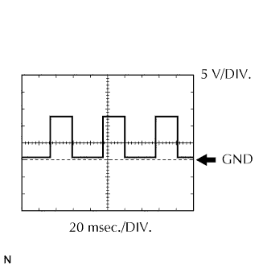

HỆ THỐNG CHỐNG TRỘM > CÁC CỰC CỦA ECU |
| KIỂM TRA ECU CẢNH BÁO CHỐNG TRỘM |
Ngắt giắc nối T9 của ECU.
Đo điện áp và điện trở của giắc nối phía dây điện.
| Ký hiệu (Số cực) | Màu dây | Mô tả cực | Điều kiện | Điều kiện tiêu chuẩn |
| IG (T9-18) - E (T9-1) | R-L - B-W | Cấp nguồn khóa điện | Khoá điện OFF | Dưới 1 V |
| IG (T9-18) - E (T9-1) | R-L - B-W | Cấp nguồn khóa điện | Khoá điện ON | 10 đến 14 V |
| +B1 (T9-4) - E (T9-1) | L-Y - B-W | Nguồn +B (ECU-B) | Luôn luôn | 10 đến 14 V |
| +B2 (T9-14) - E (T9-1) | LG - B-W | Nguồn +B (DOOR) | Luôn luôn | 10 đến 14 V |
| DSWH (T9-9) - E (T9-1) | G-R - B-W | Tín hiệu vào của công tắc đèn cửa | Nắp capô đóng hoàn toàn | 10 kΩ trở lên |
| DSWH (T9-9) - E (T9-1) | G-R - B-W | Tín hiệu vào của công tắc đèn cửa | Nắp capô mở | Dưới 1 Ω |
| E (T9-1) - Mát thân xe | B-W - Mát thân xe | Mát | Luôn luôn | Dưới 1 Ω |
| L2 (T9-25) - Mát thân xe | L - Mát thân xe | Tín hiệu ra công tắc điều khiển cửa (công tắc chính) LOCK | Công tắc điều khiển cửa (công tắc chính) LOCK | Dưới 1 Ω |
| L2 (T9-25) - Mát thân xe | L - Mát thân xe | Tín hiệu ra công tắc điều khiển cửa (công tắc chính) LOCK | Công tắc điều khiển cửa (công tắc chính) OFF | 10 kΩ trở lên |
| UL3 (T9-26) - Mát thân xe | L-W - Mát thân xe | Tín hiệu ra công tắc điều khiển cửa (công tắc chính) UNLOCK | Công tắc điều khiển cửa (công tắc chính) UNLOCK | Dưới 1 Ω |
| UL3 (T9-26) - Mát thân xe | L-W - Mát thân xe | Tín hiệu ra công tắc điều khiển cửa (công tắc chính) UNLOCK | Công tắc điều khiển cửa (công tắc chính) OFF | 10 kΩ trở lên |
| KSW (T9-5) - Mát thân xe | G-Y - Mát thân xe | Công tắc cảnh báo mở khoá | (Không có chìa khóa trong ổ khóa điện) | 10 kΩ trở lên |
| KSW (T9-5) - Mát thân xe | G-Y - Mát thân xe | Công tắc cảnh báo mở khoá | (Cắm chìa khóa vào trong ổ khóa điện) | Dưới 1 Ω |
Nối lại giắc nối T9 của ECU.
Đo điện áp của giắc nối.
| Ký hiệu (Số cực) | Màu dây | Mô tả cực | Điều kiện | Điều kiện tiêu chuẩn |
| IND (T9-27) - E (T9-1) | G-R - B-W | Tín hiệu ra đèn báo an ninh | Đèn báo an ninh nháy (Hệ thống chống trộm đang hoạt động) | Thay đổi giữa dưới 1 V và 10 đến 14 V |
| CTY (T9-7) - E (T9-1) | R-L - B-W | Tất cả tín hiệu vào của công tắc đèn cửa | Cửa phía lái xe, phía hành khách trước, sau trái và sau phải đóng | 10 đến 14 V |
| CTY (T9-7) - E (T9-1) | R-L - B-W | Tất cả tín hiệu vào của công tắc đèn cửa | Cửa phía lái xe, phía hành khách trước, sau trái và sau phải mở | Dưới 1 V |
| HORN (T9-11) - E (T9-1) | W-R - B-W | Tín hiệu cả hai còi trên xe phát ra (Tần số thấp và tần số cao) | Trạng thái sẵn sàng | 10 đến 14 V |
| HORN (T9-11) - E (T9-1) | W-R - B-W | Tín hiệu còi trên xe phát ra | Trạng thái kêu báo động | Dưới 1 V |
| SH- (T9-13) - E (T9-1) | B - B-W | Tín hiệu ra còi an ninh | Còi an ninh kêu (Hệ thống chống trộm ở trong trạng thái kêu báo động) | Thay đổi giữa 1 V và 10 đến 14 V |
| HAZD (T9-28) - E (T9-1) | G-O - B-W | Tất cả tín hiệu ra của đèn báo nguy hiểm | Các đèn báo nguy hiểm đang nháy (Hệ thống chống trộm ở trong trạng thái kêu báo động) | Thay đổi giữa 1 V và 10 đến 14 V |
| SRLY (T9-12) - E (T9-1) | W-B - B-W | Tín hiệu phát ra cắt máy đề | Trạng thái sẵn sàng | 10 đến 14 V |
| SRLY (T9-12) - E (T9-1) | W-B - B-W | Tín hiệu phát ra cắt máy đề | Trạng thái kêu báo động | Dưới 1 V |
| SPD (T9-17) - E (T9-1) | V-R - B-W | Tín hiệu tốc xe từ bảng đồng hồ táplô | Khóa điện ON, một bánh xe chủ động quay chậm | Tạo xung (xem dạng sóng) |
|  |
Dùng máy chẩn đoán, kiểm tra dạng sóng.
| Hạng mục | Nội dung |
| Ký hiệu (Số cực) | SPD (T9-17) - E (T9-1) |
| Đặt dụng cụ đo | 5 V/DIV., 20 msec./DIV. |
| Điều kiện | Trong khi lái xe |
| KIỂM TRA HỘP ĐẤU DÂY PHÍA LÁI XE (RƠLE TÍCH HỢP) |
Ngắt các giắc 2A, 2D và 2L của hộp đấu dây.
Đo điện áp và điện trở của giắc nối phía dây điện.
| Ký hiệu (Số cực) | Màu dây | Mô tả cực | Điều kiện | Điều kiện tiêu chuẩn |
| BECU (2L-12) - GND (2D-9) | L - W-B | Nguồn +B (BECU) | Luôn luôn | 10 đến 14 V |
| GND (2D-9, 18) - Mát thân xe | W-B - Mát thân xe | Mát | Luôn luôn | Dưới 1 Ω |
| L1 (2A-4) - Mát thân xe | L - Mát thân xe | Tín hiệu vào công tắc điều khiển cửa (công tắc chính) LOCK | Công tắc điều khiển cửa (công tắc chính) LOCK | 10 kΩ trở lên |
| L1 (2A-4) - Mát thân xe | L - Mát thân xe | Tín hiệu vào công tắc điều khiển cửa (công tắc chính) LOCK | Công tắc điều khiển cửa (công tắc chính) OFF | Dưới 1 Ω |
| UL1 (2D-4) - Mát thân xe | L-W - Mát thân xe | Tín hiệu vào công tắc điều khiển cửa (công tắc chính) UNLOCK | Công tắc điều khiển cửa (công tắc chính) UNLOCK | 10 kΩ trở lên |
| UL1 (2D-4) - Mát thân xe | L-W - Mát thân xe | Tín hiệu vào công tắc điều khiển cửa (công tắc chính) UNLOCK | Công tắc điều khiển cửa (công tắc chính) OFF | Dưới 1 Ω |
Nối lại các giắc 2A, 2D và 2L của hộp đấu dây.
Đo điện áp của giắc nối phía dây điện.
| Ký hiệu (Số cực) | Màu dây | Mô tả cực | Điều kiện | Điều kiện tiêu chuẩn |
| ACT+ (2R-28) - Mát thân xe | L - Mát thân xe | Tín hiệu ra daan động LOCK môtơ khóa cửa (cửa phía lái xe) | Công tắc điều khiển cửa (công tắc chính) hay ống khóa cửa phía lái xe OFF | Dưới 1 V |
| ACT+ (2R-28) - Mát thân xe | L - Mát thân xe | Tín hiệu ra daan động LOCK môtơ khóa cửa (cửa phía lái xe) | Công tắc điều khiển cửa (công tắc chính) hay ống khóa cửa phía lái xe LOCK | 10 đến 14 V |
| ACT- (2R-27) - Mát thân xe | L-Y - Mát thân xe | Tín hiệu ra dẫn động UNLOCK môtơ khóa cửa (cửa phía lái xe) | Công tắc điều khiển cửa (công tắc chính) hay ống khóa cửa phía lái xe OFF | Dưới 1 V |
| ACT- (2R-27) - Mát thân xe | L-Y - Mát thân xe | Tín hiệu ra dẫn động UNLOCK môtơ khóa cửa (cửa phía lái xe) | Công tắc điều khiển cửa (công tắc chính) hay ống khóa cửa phía lái xe UNLOCK | 10 đến 14 V |
| DCTY (2O-27) - Mát thân xe | R-B - Mát thân xe | Tín hiệu vào công tắc đèn cửa lái xe | Đóng cửa người lái | 10 đến 14 V |
| DCTY (2O-27) - Mát thân xe | R-B - Mát thân xe | Tín hiệu vào công tắc đèn cửa lái xe | Mở cửa phía người lái | Dưới 1 V |